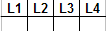
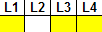
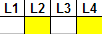
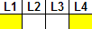
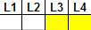
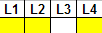

Affichage optique
les LED L1,L2,L3,L4 indique
les étatsde marche du VF20informent aussides incidents de fonctionnementpendant 2 secondes au terme de chaque course
La LED "ERROR" signale
que la VF est BLOQUE"ERREUR FATALE"

Pas de tension d'alimentation

Aucune valeur dans EEPROM aprés RESET

Aucune identification droite/gauche

- Le moteur ne démarre pas après 25Hz- Pas d'impultion à VKN

Défaut de vitesse:- VKN > 115%- VKN< VKN x 1,15/2

- Aucune impultion à l'entrée de l'étage de destination- Freinage à courantcontinu supérieur à 5 sec
Retour Acceuil